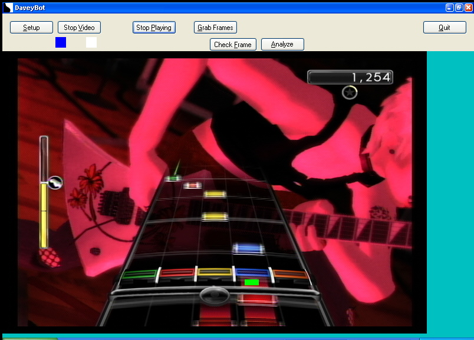
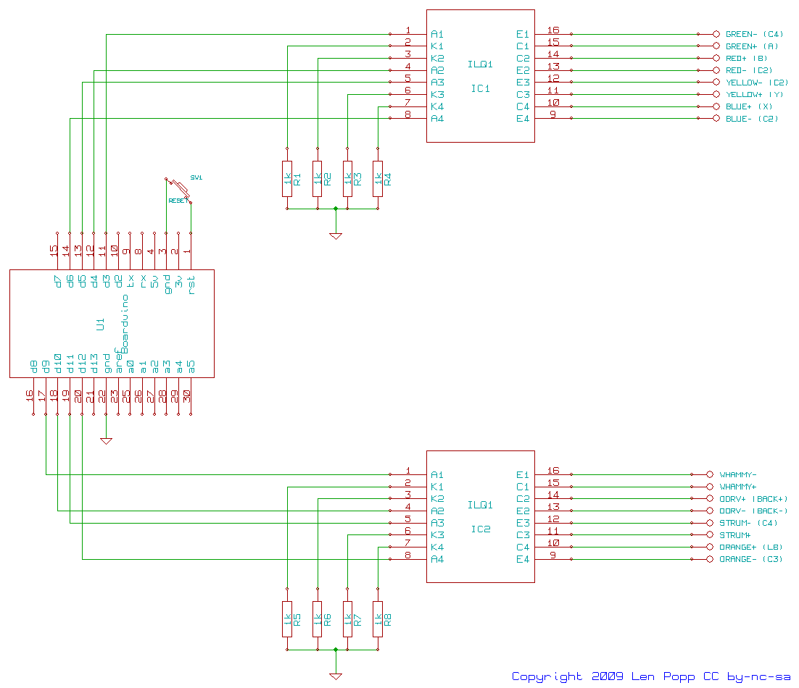
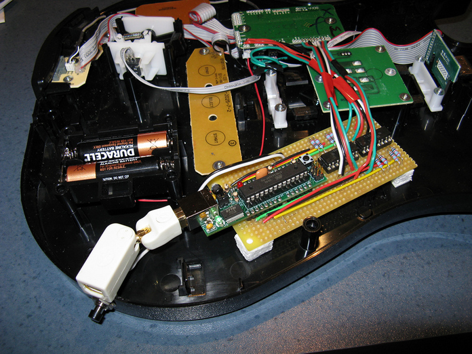
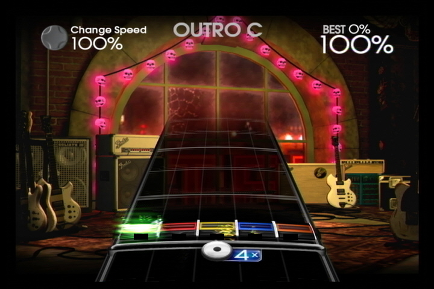

Updated: 2009-05-10, 2022-02-08
Overview
I have hooked up my computer to a Guitar Hero controller, and written software to play Rock Band and Guitar Hero. Why? Well, if you have to ask, you probably wouldn’t get it.
Please note that this project is many years old and is not compatible with current versions of Xbox, Windows, Arduino, etc.
I’m not the first to make a Guitar Hero ‘bot.
Here’s onedead link
and here’s another.
I’m a software guy and I already have a computer that handles video input (to record TV
shows), so I did most of the work in software. The software should eventually work
with different games. (I have Rock Band, Rock Band 2 and Guitar Hero World Tour.)
The general idea is:
- The computer receives the game video from the Xbox 360.
- Software on the computer analyzes the video to figure out when to play the notes.
- The software sends commands via USB to an interface module in the Guitar Hero controller.
- The module in the guitar simulates the button presses to play the notes.
DaveyBot is named after a fictional Guitar Hero.
Current Status
Status (2009-05-10): DaveyBot is up and running! It’s not perfect, though. The software needs more work. Currently it plays Rock Band and Rock Band 2 on Expert difficulty.
Pictures
There are more pictures, some with annotations, here.
Download
Download software, firmware, schematics here.
Software
The DaveyBot software is written in C#. It uses DirectShow to capture the video input (via the DirectShowNet C# library). Each video frame is analyzed to see if a note is approaching the strike line. If so, DaveyBot sends a command out through a comm port, to tell the guitar to play a note.
Here’s a shot of the DaveyBot software in action with Rock Band 2:
The coloured blocks overlaid on the image and above it show the notes that are detected and played. You can see that the image is quite blurry. It’s a challenge to get the software to accurately identify the notes. You may also notice that DaveyBot is losing the game. That’s because it wasn’t hooked up to a guitar yet!
The note-detection logic isn’t perfect yet. It sometimes misses notes and it tends to get confused by other things that flash onto the screen. There’s more work to do before it can play all songs perfectly.
Another challenge was the DirectShow API for video capture (part of Windows DirectX). I think that API was designed by a Sudoku fanatic who didn’t want anyone else to use it. I figured out how to navigate the maze corresponding to my TV tuner card, but I’m not confident that the software would work on a computer with different video capture hardware.
So far I’ve been using Rock Band 2 but I should be able to tweak the software to play Guitar Hero as well. Some of the specialized features don’t work (solo buttons and slider bar) but I hope to add support for overdrive/star power.
Arduino
To interpret the commands from the computer and simulate pressing the buttons, I’m using an Arduino microcontroller embedded in the guitar. Actually I’m using a Boarduino because it’s small enough to fit in the guitar, it’s powered by the USB connection from the computer, and its pinout fits nicely on a prototyping board.
The Arduino is connected to the computer via USB, but under Windows it appears as a serial comm port. The commands sent from the computer are each a single byte, with each bit representing the on/off state of one of the switches (fret buttons, strum bar, whammy bar, tilt switch).
The software running on the Arduino is simple. When it receives a command byte from the computer, it turns the appropriate output pins on or off. The strum bar is handled specially. It is turned on momentarily, then off again after a brief time. The whammy bar also needs special handling because it has to be moved continually, but I haven’t implemented that yet.
Here’s a video of the Boarduino in action, receiving commands from the computer and driving a set of LEDs in lieu of the guitar switches:

Hardware Interface
Besides the Boarduino, the interface module in the guitar also has a set of opto-isolators, to keep the computer and Boarduino electrically isolated from the guitar controller’s circuitry. I found a pair of quad optocoupler chips (ILQ1) that do the trick nicely.
Here’s my schematic for the interface board:
Here’s what the interface module looks like installed in the guitar controller. (Click for an annotated version of the picture.) 
The outputs from my interface board are connected to the spots on the logic board where the wires from the guitar’s switches come in. There’s a twisty USB connector bringing the Boarduino’s USB connection to the outside of the guitar. (If I’d been thinking ahead I would have just put the Boarduino’s USB connector on a short cable when I put it together.) There’s also a reset switch for the Boarduino, which is needed to start it running after it’s plugged into the computer.
When it’s not plugged into the computer, the guitar controller functions normally.
One thing that doesn’t work yet is the whammy bar. It’s not necessary for playing the game, but it can be used to increase your score. The whammy bar uses a potentiometer hooked up as a voltage divider, and I haven’t figured out how to control it using an optocoupler.
Success
Here’s the result of DaveyBot’s first full system test:

Here’s how DaveyBot does playing Painkiller on expert difficulty. Not perfect yet, but quite good.